J'ai choisi le ski/snow pour plusieurs raisons. Premièrement, c'est une activité que j'aime énormément pratiquer dans mes temps libres, que ce soit seul ou à plusieurs. Il y a toujours de nouvelles choses que je veux essayer quand j'y suis. De plus, mon ami a récemment découvert le ski et est rapidement devenu accro à celui-ci, ce qui rendait cette sortie encore plus motivante pour lui et moi. De son côté, ma blonde aime aussi skier, ce qui complétait le cercle. Aussi, j'avais déjà une passe de saison des Sommets, ce qui me permettait de skier sans avoir à me payer de passe. Par la même occasion, je pouvais offrir des rabais sur un billet, ce qui a réduit le coût total de l'activité. Le ski est aussi quelque chose qui peut être pratiqué pendant un long moment en continu, donc parfait dans le contexte d'une activité de trois heures. Pour finir, les conditions météorologiques étaient plus qu'idéales : une belle journée d'hiver, pas trop nuageuse et avec une température agréable, parfaite pour profiter pleinement des pistes de Saint-Sauveur.
Le 19 mars 2026 (3 jours avant l'activité), j'ai texté mon ami pour lui demander s'il voulait venir skier avec moi et ma blonde (nous étions ensemble cette fin de semaine et avions déjà prévu de skier il y a de cela quelques semaines). Après avoir eu sa réponse positive, nous avons commencé à organiser le tout. Pour commencer, je fus désigné comme chauffeur car j'étais le seul qui avait accès à une voiture, en plus d'être électrique, ce qui réduisait les coûts. Par contre, cette voiture était celle de ma mère et j'avais comme consigne de revenir avant 17h, donc nous avons planifié avec cela en tête. Le plan était de partir de chez moi avec ma blonde vers 9h, être chez mon ami pour 9h15 et arriver là-bas pour 10h, skier jusqu'à 14h avec une heure pour dîner, puis repartir vers 14h30. Au final, nous sommes partis vers 9h45, étions chez mon ami pour 10h et sommes arrivés là-bas vers 11h. Cela rentrait tout de même dans les temps, nous étions simplement partis plus tard (retour à 15h30). Chacun était responsable de son équipement. Ma blonde et moi avions le nôtre au complet, mais mon ami, étant nouveau dans le domaine, n'avait qu'une salopette et une cagoule. J'avais comme mission de lui apporter des lunettes, des gants, des grosses chaussettes et mon manteau. De son côté, il louait les skis et le casque.
Nous avions prévu un lunch pour ma blonde et moi, composé de restes de la veille, d'eau pétillante, de Gatorade, de fruits (fraises et bleuets) ainsi que des barres tendres. De son côté, mon ami allait manger à la cafétéria
Comme matériel pour moi : snow, casque, cagoule x2, gants x2, mitaines, lunettes x2, écouteurs, salopette, combinaison, hoodie x2, manteau, bottes et bas x2.
Comme matériel pour ma blonde : skis, casque, lunettes, combinaison, manteau, bottes, salopette, bas, cagoule et bâtons.
Comme matériel pour mon ami : salopette, hoodie, cagoule et manteau.
Nous avions prévu de skier peu importe la température et en cas de retard et d'imprévu de nous adaptée.
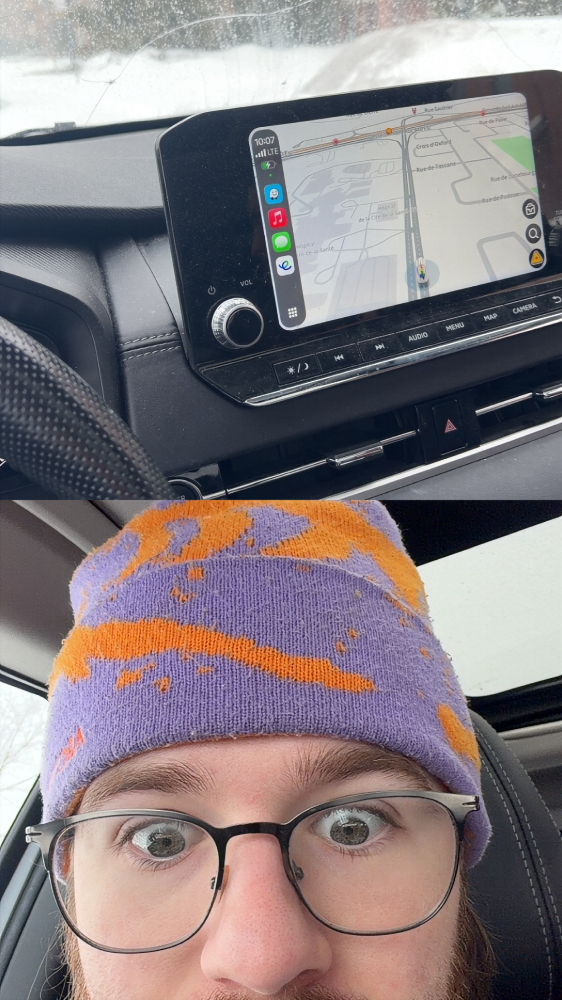
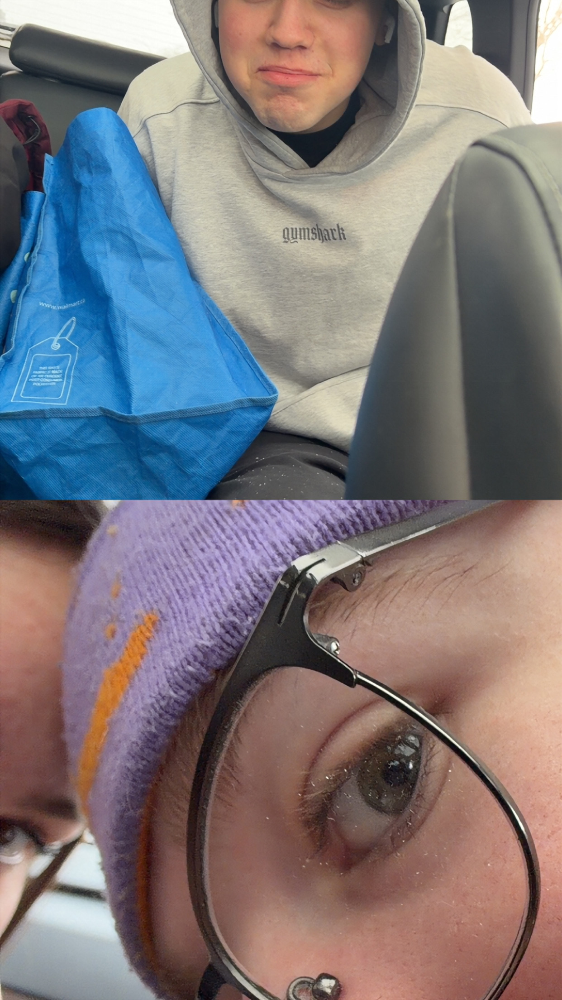
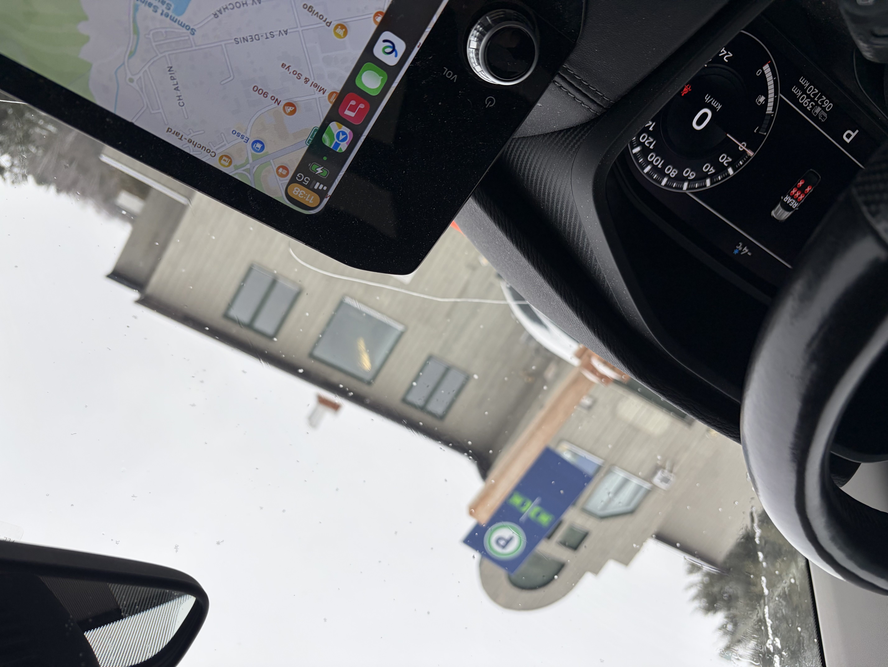
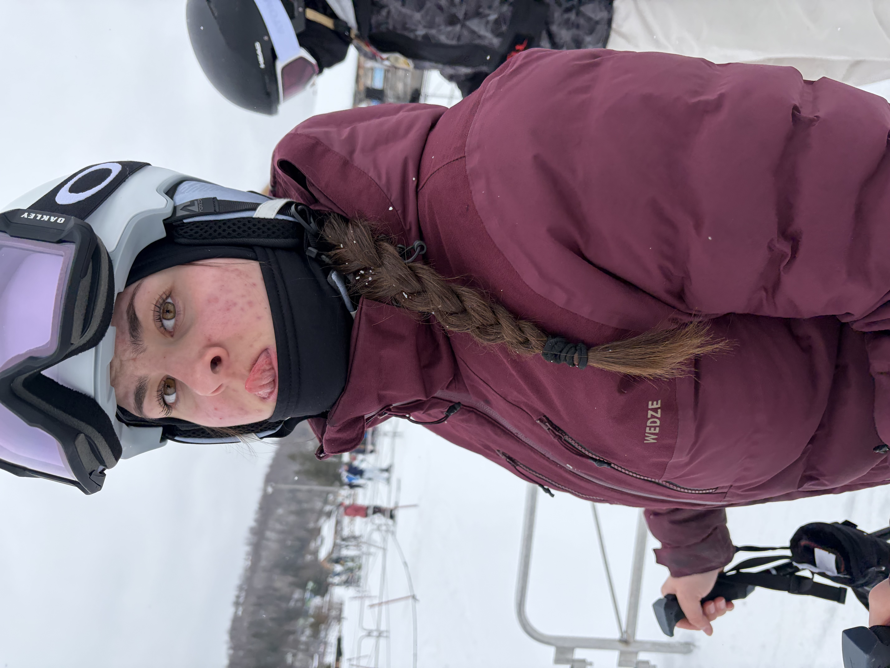
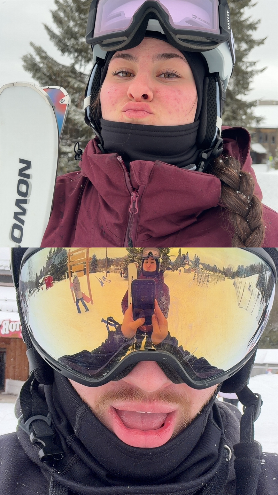
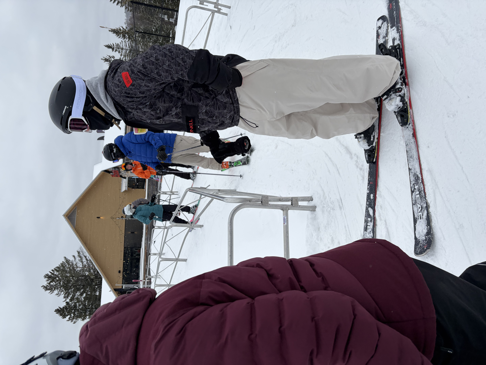
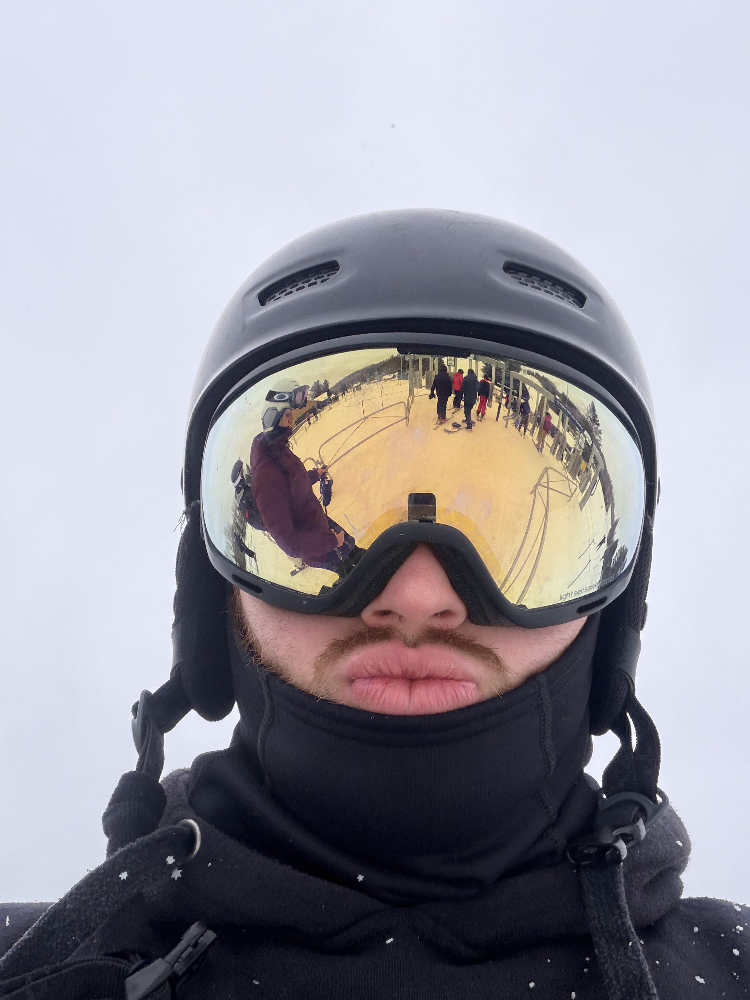
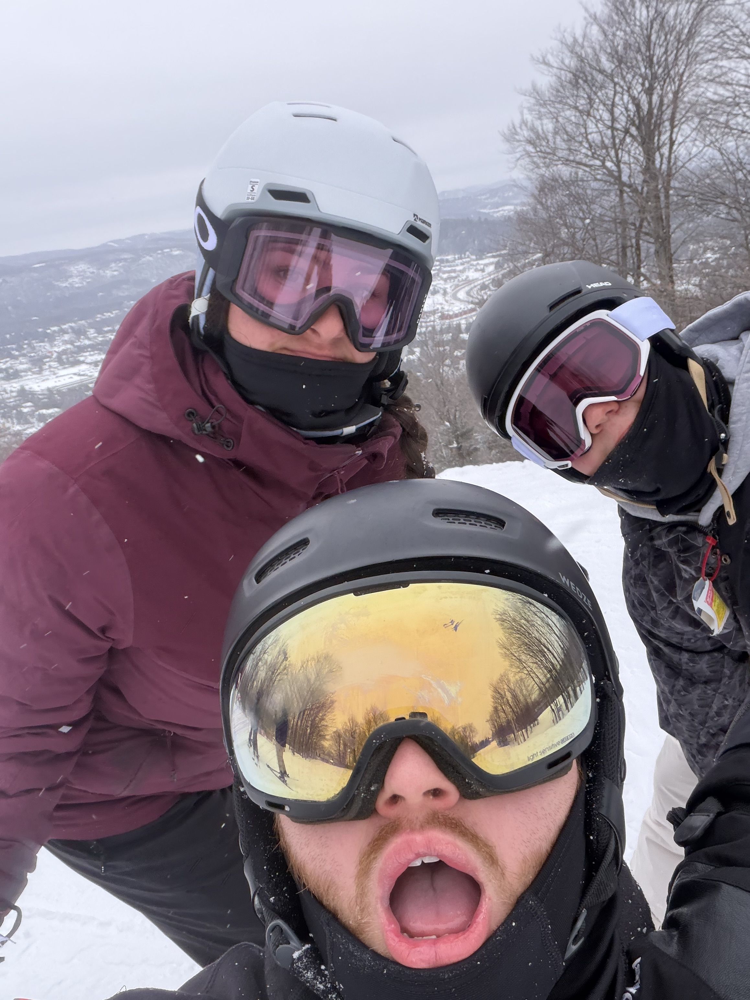
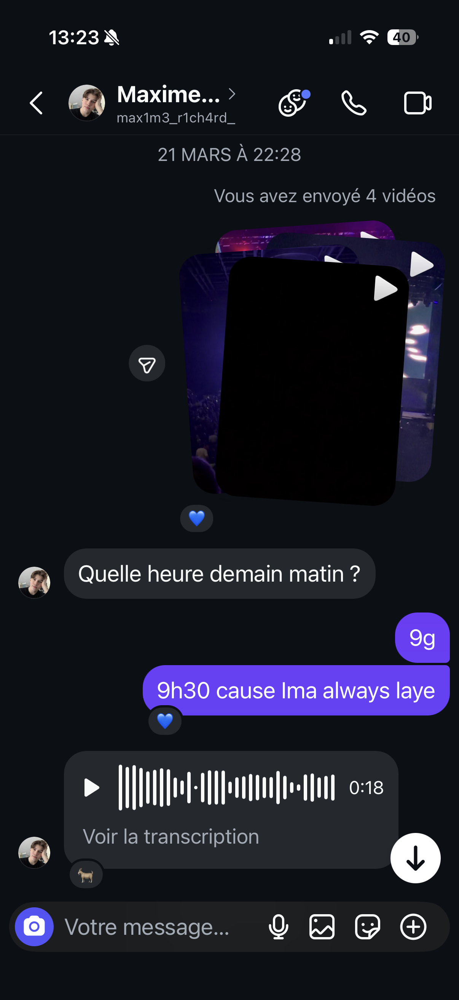
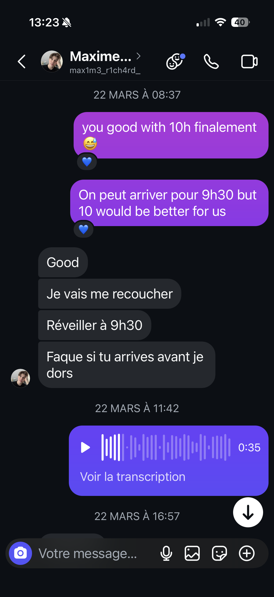
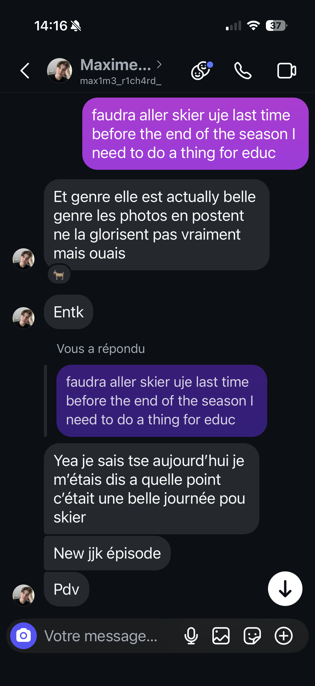
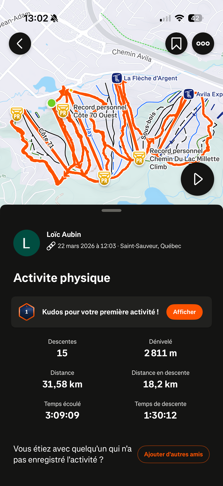
Il y a un strava de l'activité, des photos de l'heure de départ et d'arriver et des photos depuis l'activité
Cette sortie de ski m’a apporté beaucoup sur plusieurs plans. Physiquement, l’activité était relativement accessible lorsque j’essayais simplement de suivre les deux autres et de descendre les pistes normalement. Mais lorsque je tentais de repousser mes limites et d’apprendre de nouvelles choses en pratiquant des sauts, des 180, des 360 (tous ratés) ou des grabs, cela devenait rapidement exigeant autant pour les jambes que pour le cardio. À la fin de la sortie, je ressentais clairement l’effort de chaque descente accumulée. Le lendemain, j’avais des courbatures dans les deux jambes, ce qui m’a rappelé que même une activité que j’aime demande un effort physique réel si on veut progresser. Sur le plan organisationnel, j’ai appris une leçon importante : toujours faire un dernier tour de vérification avant de partir et prévoir de partir à l’avance. En effet, nous avons oublié le sac contenant les 3/4 de l’équipement de mon ami ainsi que toute la nourriture, ce qui nous a forcés à faire 3 heures sans arrêt, car nous ne voulions pas dépenser, et a obligé mon ami à s’acheter une paire de lunettes de ski. Cela aurait pu être évité facilement si nous n’étions pas pressés de partir et si nous avions vérifié deux fois avant de partir. C’est un réflexe que je vais essayer d’adopter dans mes prochaines sorties. Personnellement, cette journée m’a confirmé à quel point le ski est une activité qui me ressemble et qui me permet de me dépasser à mon propre rythme tout en m’amusant. Je serais prêt à refaire cette activité tous les jours si je le pouvais, avec ou sans les personnes qui m’ont accompagné. Il y a eu plusieurs points positifs et négatifs dans cette activité. Un des points positifs est la bonne compagnie. Un des aspects que j’ai le plus aimé de cette sortie au ski est les personnes avec qui j’étais. Skier avec deux personnes que j’aime et que j’apprécie a rendu chaque moment plus joyeux et plus plaisant. En plus, cela nous crée des souvenirs que nous allons pouvoir garder longtemps. Cela aide principalement lors des remontées, car on le sait tous : le temps d’attente passe toujours plus vite lorsque l’on parle. Un autre point positif est que le ski est un sport que j’apprécie beaucoup. Il est amusant et challengeant : c’est une activité qui offre autant de plaisir que de défis. Dès que je comprends quelque chose de nouveau, comme un 180, j’ai tout de suite envie d’apprendre l’étape suivante. C’est comme une addiction. Cette journée m’a permis de perfectionner ce que je savais déjà et j’ai appris un nouveau grab. Le troisième point positif était la température. Cette journée était ni trop froide ni trop chaude, avec un peu de neige qui tombait. Une température idéale pour skier. Du côté des points négatifs, il y a bien entendu, comme mentionné plus haut, l’oubli d’un sac. Cela a forcé mon ami à skier avec mes mitaines et des petits gants, à acheter une nouvelle paire de lunettes car il ne pouvait pas skier sans, vu qu’il neigeait, et nous n’avons pas pu manger, car la nourriture dans une station de ski est hors de prix. Cela a créé un stress inutile qui aurait pu être évité, nous faisant perdre du temps et de l’argent. La bonne chose fut que mon ami avait déjà prévu de s’acheter des lunettes dans un futur proche, donc cela l’a simplement poussé à le faire un peu plus tôt. L’autre point négatif était les pistes. Malgré la température agréable, les jours précédant la sortie il avait fait positif, ce qui a fait fondre la neige. Le jour de la sortie, comme il avait fait froid durant la nuit, certaines pistes étaient gelées et peu praticables. Heureusement, cela était limité à quelques pistes très abruptes que nous avons évitées à cause du niveau débutant de mon ami.
Identifie au moins trois points forts ou moments marquants.
En bonne compagnie
Un sport amusant et challengeant
Une belle journée pas trop froide, pas trop chaude et un peu de neige
Oublie d'un sac contenant la nourriture et le 3/4 de l'équipement à mon ami
Il avait fait chaud les jours avant, donc cette journée-là, certaines pistes étaient glacées.
Si j’avais à refaire l’activité, je m’assurerais de vérifier l’équipement à deux reprises avant de partir afin d’être certain de ne rien oublier. De plus, je veillerais à avoir la voiture pour toute la journée, afin de ne pas être obligé de revenir à une heure précise, ce qui me permettrait de profiter davantage du temps pour skier. J’irais peut-être aussi avec des personnes davantage de mon niveau. Même si je me suis beaucoup amusé à regarder mon ami essayer des sauts pour la première fois, il est plus agréable de skier avec des personnes qui font les mêmes choses que moi, au même niveau ou à un niveau supérieur, ce qui me pousserait à m’améliorer.
Cette activité étant fréquente pour moi, elle était adaptée à mes capacités physiques. Elle m’a permis de faire du sport, de transpirer et d’avoir mal aux jambes le lendemain. Même si je suis habitué à faire du ski de façon calme, j’essaie toujours, lorsque j’y vais, que ce soit seul ou avec d’autres personnes, de pratiquer de nouvelles choses. Par exemple, cette fois-ci, j’ai pratiqué mon switch en snowboard ainsi que mon backside 180/360, ce qui m’a forcé à faire beaucoup plus d’efforts physiques que si je faisais simplement du ski normal.Après quelques sauts consécutifs, j’ai remarqué que mon cardio n’était pas au rendez-vous, ce qui m’a donné une idée de ma condition physique sur ce point précis.